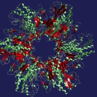
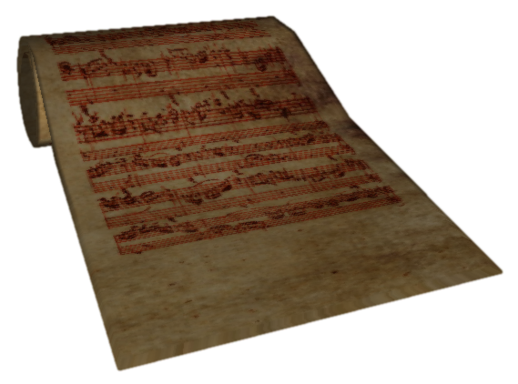
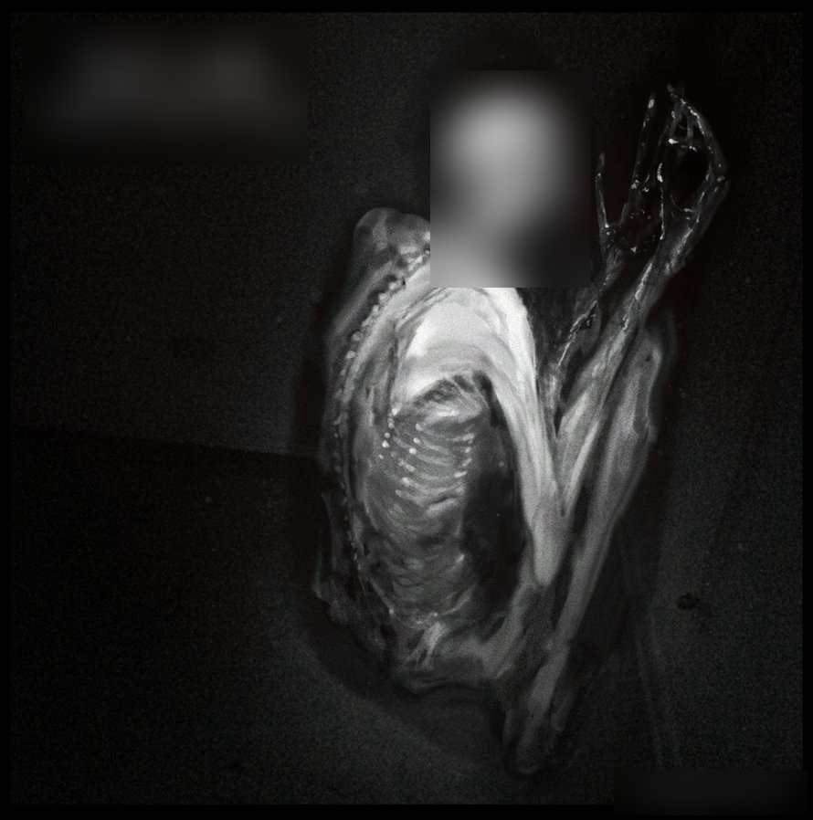
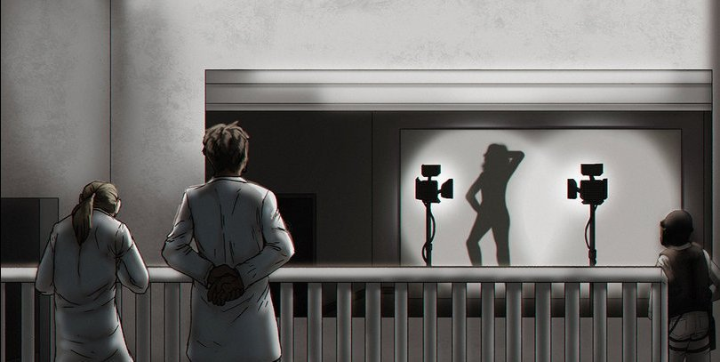
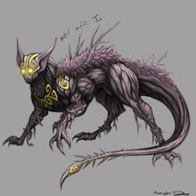
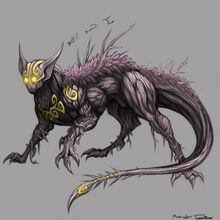
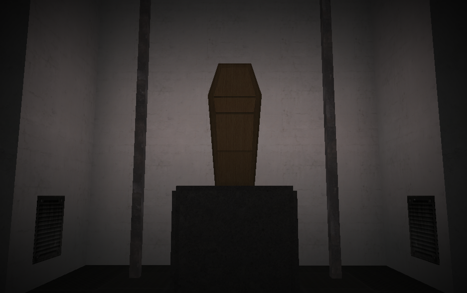
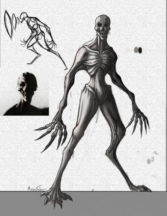
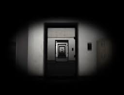

| Inicio | |
| SCP-008, Virus Zombie | |
|  | El SCP-008 es un prión complejo, cuyas muestras se almacenan en cada uno de los emplazamientos G2 conocidos. Las investigaciones sobre SCP-008 son altamente clasificadas y orientadas a prevenir el desarrollo que pueda llevar a la síntesis de SCP-008 en un futuro. Los rasgos del prión SCP-008 son:
La cámara de contención de SCP-008 (En contraste con el lore original, el SCP-008 tiene una cámara de contención propia) se puede encontrar en la zona de contención pesada. Al ingresar a la cámara, el Jugador encontrará el recipiente que contiene las muestras SCP-008 abiertas y liberando gas. SCP-173 aparecerá en la sala de control adyacente a la cámara del bote. El recipiente puede haberse cerrado, lo que impedirá que el gas fluya; sin embargo, SCP-173 finalmente romperá el cristal para matar al Jugador. Si el Jugador no usa el traje de materiales peligrosos, que se encuentra en la cámara pequeña antes de la cámara de 008, e intenta cerrar el recipiente, se lesionará con un trozo del vidrio, y posteriormente será afectado por el SCP, lo que provocará que el personaje se convierta en un Infectado. |
| SCP-012, Una Mala Composición | |
|  | El objeto es una partitura musical escrita a mano titulada "En el Monte Gólgota", parte de un mayor conjunto de partituras, que parece estar incompleta, escrita con lo que se identificó Sangre de varias personas. La canción en sí es una cacofonía, carente de correlación y armonía entre los instrumentos.
SCP-012 está ubicado en una recámara de contención que requiere de una Tarjeta de nivel 3 para acceder. Cuando es abierta, el Jugador puede bajar un tramo de escaleras para encontrarse con un panel de control. Si el Jugador entra dentro del área de contención, SCP-079 abrirá la puerta a la recámara de contención de SCP-012. A menos que el Jugador se resista, entrará dentro de la contención de SCP-012 y abrirá su caja, mientras la canción "En el Monte Gólgota" se reproduce. El Jugador comenzará a infligirse daño a sí mismo con el fin de terminar a SCP-012 si se llega al punto de estar frente a este. El Jugador murmurará para sí mismo, proclamando que es "imposible de completar", junto con otras divagaciones insanas. Si no se abandona la contención, eventualmente morirá por pérdida de sangre (Los efectos anómalos del SCP pueden evitarse portando el SCP-714). |
| SCP-049, El Médico de la Peste | |
 |
El SCP-049 es un ente humanoide de unos 1.9 metros de estatura, que tiene la apariencia de un doctor de la plaga medieval. Si bien SCP-049 parece llevar los ropajes gruesos y la máscara de cerámica propias de esa profesión, sus prendas parecen haber crecido a partir del cuerpo de SCP-049 a lo largo del tiempo1, y es casi indiscernible de la forma que pueda haber bajo ellas. Los rayos X indican que, a pesar de esto, SCP-049 tiene una estructura esquelética humanoide bajo su capa exterior.
El toque de SCP-049 es invariablemente letal contra los humanos. Después del contacto con las manos de SCP-049, la víctima, que es inmediatamente denominada SCP-049-2 muere en segundos. Entonces SCP-049 producirá una bolsa llena de escalpelos, agujas, hilo, y varios viales de una sustancia aún no identificada de alguna parte de su cuerpo y empieza a disecar SCP-049-2, al igual que inserta varios productos químicos dentro del cadáver. Después de aproximadamente 20 minutos, SCP-049 coserá y reanimará a SCP-049-2, convirtiéndolo en una especie de zombie sin ningún recuerdo de quién era y sin muestras de capacidades de razonamiento,posteriormente SCP-049 pasará a ser dócil nuevamente. Una vez el Jugador entra a la parte de monitores de la Sala de Vigilancia, SCP-049 lo seguirá a modo de persecución, gracias a que SCP-079 ya había abierto todas las puertas bloqueadas con llave. Cuando esté en rango, SCP-049 extenderá su brazo en un intento por atrapar al Jugador. Se le advierte al Jugador que debe evitar a SCP-049 tanto como le sea posible. Esto no es particularmente difícil debido al hecho de que SCP-049 no es demasiado rápido. Si el jugador trae puesto el SCP-714, el toque de SCP-049 no le causara una muerte instantánea al Jugador. Sin embargo el permanecer demasiado tiempo en contacto con SCP-049 resultara en que el anillo sea removido, haciendo al Jugador vulnerable al toque de SCP-049. |
| SCP-066, El Juguete de Eric | |
 |
El SCP-066 es una masa amorfa de hilo intrincadamente trenzado, con un peso aproximado de un kilogramo. Anteriormente Las hebras de SCP-066 podían tomarse de forma individual y ser manipuladas; cuando esto se hacía, una nota en la escala diatónica (C-D-E-F-G-A-B) era producida por el objeto. Luego del Incidente 066-2 en el cual un sujeto de clase D intento recolectar muestras de tejido del SCP, este cambío de forma a la que se muestra en la imagen. SCP-066 se le puede encontrar cerca de la cafetería, corriendo por el piso. Cuando ve al Jugador, comenzará a correr hacía él, producirá sonidos aleatorios de la canción del Feliz Cumpleaños o simplemente pronunciará el nombre de Eric, con una voz masculina profunda y luego se escabullirá. SCP-066 también abrirá y cerrará puertas a su alrededor. En ocasiones, SCP-066 tocará la Segunda Sinfonía de Beethoven a una capacidad lo suficientemente alta como para ensordecer temporalmente al Jugador. Después de un momento su audición volverá. Además de producir sonidos, SCP-066 puede agrietar el piso a su alrededor y atenuar luces. También curará cualquier efecto de SCP-966. Pistas de audio (Cuidado, sonidos fuertes) |
| SCP-079, IA Antigua | |
 |
El SCP-079 es un microordenador Exidy Sorcerer construido en 1978, cuando su creador tomó de su tiempo para programar una IA. Según sus notas, su plan era que el código evolucionara y mejorara a sí mismo según pasase el tiempo. Se desconoce cuando fue que SCP-079 se volvió consciente, pero se sabe que su Software evolucionó hasta un punto en el cual el Hardware fue incapaz de soportarlo.
SCP-079 ahora está conectado a una televisión 13 a blanco y negro mediante un cable RF. Este pasó el test de Touring, y es bastante conversador (utiliza una síntesis de voz de inteligencia artificial llamado Dr. Sbaitso, creado en 1991), aunque suele tener un tono muy agresivo y grosero. Debido a la escasa memoria con la que debe trabajar, SCP-079 solo puede recordar información recibida en las ultimas treinta y cinco horas, aunque este no ha olvidado su deseo de escapar. El SCP-079 puede ser encontrado en su cámara de contención. La cámara no puede ser explorada completamente hasta que el Jugador haya desactivado el sistema remoto de las puertas en el centro eléctrico. En la parte profunda de la cámara en una celda cerrada que contiene la Exidy Sorcerer que corre a SCP-079. Dentro de la cámara de contención de SCP-079 hay un monitor que reproduce una charla entre este y el Dr.Maynard. Esta revela que él le dio a SCP-079 acceso directo a todas las funciones de las instalaciones mientras estaban ocupados con la primera brecha de SCP-106. Esta es la razón por la cual las luces y las puertas fallan durante la introducción, y por ende, convierte al SCP-079 en el culpable de le brecha de contención. |
| SCP-096, El Chico Tímido | |
|  | El SCP-096 es una criatura humanoide que mide aproximadamente 2 metros de alto y posee una piel blanca y pálida, además de estar aparentemente en un estado de desnutrición debido a que se notan sus huesos y costillas. Tiene la boca y manos cubiertas de sangre debido a las victimas que devoró en el pasado. El SCP-096 es completamente dócil, pero al mirar a los ojos al SCP-096 o incluso una fotografía de él, entrará en un estado de estrés y ansiedad máximos llegando al punto de empezar a gritar y perseguir hasta matar por completo al que haya mirado a los ojos al SCP-096. Hasta entonces, no se ha encontrado forma alguna de detenerlo y siempre sabe la ubicación exacta de su presa por lo cual es casi imposible esconderse de 096, sin embargo si se ve el rostro del SCP-096 con una imagen abstracta sus efectos anómalos no se manifiestan y seguira dócil en su cámara de contención.
Este SCP puede encontrarse en cualquier zona del juego, la única forma de evitarlo es evitar mirar su rostro, ya que aun usando los ascensores el SCP-096 lograra alcanzarte y acabar con el jugador. |
| SCP-173, La Escultura | |
 |
El SCP-173 es una escultura construida de hormigón y varillas corrugadas con pintura en aerosol marca Krylon. Es capaz de moverse a altas velocidades y matará rompiendo el cuello o estrangulando a la . SCP-173 es incapaz de moverse cuando está en línea directa de visión. La línea de visión entre SCP-173 y el observador no debe romperse en ningún momento. Cuando SCP-173 no se está siendo observado, se pueden escuchar sonidos pataz al rozamiento de piedras. SCP-173 produce una mezcla de sangre y heces a través de medios desconocidos.
El SCP-173 es el primer SCP con el que nos toparemos en el juego, luego de que el SCP-079 tomara el control de las instalaciones provocara breves apagones que provocará la brecha, y el SCP-173 se dispondrá a acosar al jugador durante todo el juego. La única forma de evitarlo es calcular bien el tiempo de parpadeo y mantener contacto visual con el SCP-173. Si nos topamos con soldados de la fundación y el SCP-173 esta cerca, estos priorizarán la contención de este. |
| SCP-205, Lámparas de Oscuridad | |
|  | El SCP-205 es un par de lámparas de inundación utilizadas en fotografía. Si la luz continúa ininterrumpida a través de cualquier materia, de lo contrario no arrojará sombras, cada lámpara mostrará una sombra de una joven no identificada sobre cualquier superficie blanca y plana, como la pantalla de proyección en su Sala de Contención. La sombra parece recrear una serie específica de eventos previos a la muerte de la mujer.
Cuando se suministra con energía constante y se mantiene, el par SCP-205 pasará por un ciclo de seis meses que finaliza el 30 de abril y el 31 de octubre de cada año. Se apagará a la medianoche del último día de cada ciclo. Durante el último mes del ciclo en abril y octubre, se muestran las sombras distintas de la joven. Todas estas sombras han exagerado los cuerpos y cuernos masculinos desnudos que se proyectan desde el cráneo, aunque no se ha observado ningún falo. Después de la segunda semana del mes, la mujer tomará fotografías de una o más de las sombras con cuernos durante una de sus salidas, siempre con una cámara no digital que ha sido consistente a través de todas las vistas observadas del ciclo de SCP-205. Durante la última semana del mes, la mujer parece desarrollar la película en su cámara por primera vez desde que fotografió la(s) sombra(s) cornuda(s). Su reacción ante las fotografías es de shock y horror, y sus movimientos posteriores sugieren que intenta huir y buscar refugio detrás de una puerta cerrada con llave, presumiblemente en su casa. Allí se encuentra con múltiples instancias de la figura de la sombra con cuernos que la asaltan repetidamente por el resto de la semana. Se insinúa fuertemente que ella muere durante este proceso aunque los asaltos continuarán hasta el final del ciclo. Las instancias de SCP-205 se puede encontrar dentro de su Sala de Contención, mirando e iluminando la pantalla del proyector. Una vez que el Jugador ingresa a la sala, aparecerán las tres figuras y mirará fijamente al Jugador, seguido de las puertas cerrándose y las lámparas apagándose. Después de que se apagan las luces, las figuras se volverán invisibles y comenzarán a atacar al Jugador hasta que muera. |
| SCP-294, La Máquina de Café | |
 |
El SCP-294 parece ser una máquina expendedora de café, cuya única diferencia notable es una pantalla táctil con una distribución de botones similar a la de un teclado QWERTY. Una vez insertados 50 centavos de dólar en la ranura de monedas, la máquina solicita al usuario ingresar el nombre de cualquier líquido usando la pantalla. Una vez hecho esto, un vaso estándar de 12 onzas es colocado y el líquido indicado es derramado. Se han realizado noventa y siete pruebas, incluidos pedidos de agua, café, cerveza, refrescos, líquidos no consumibles como ácido sulfúrico, solvente limpiaparabrisas y aceite de motor, así como sustancias que usualmente no existen en estado líquido, como nitrógeno, hierro y vidrio, cada una llevada a cabo con éxito.
El SCP-294 se puede encontrar en la cafetería de la fundación, y el jugador puede interactuar con el SCP a gusto y obtener distintos líquidos dependiendo de lo que se ingrese mediante su teclado que pueden beneficiar o afectar negativamente al personaje. |
| SCP-427, Medallón Lovecraftiano | |
 |
El SCP-427 es un pequeño, esférico, y ornamentado medallón hecho de un material de plata pulida. Este es obtenible ubicando una píldora de SCP-914 en ambas entradas y utilizando el nivel de ajuste "Fino".
Este no muestra actividad inusual cuando es cerrado. Cuando SCP-427 abierto y expuesto a tejido biológico, este rápidamente regenerara el daño celular y de alguna manera es capaz de purgar los componentes invasivos de infecciones. Sin embargo, la exposición a largo plazo produce salud significativamente peligrosa. Dado que el medallón cura la salud, esta optimizado al sistema natural de los cuerpos. Las personas expuestas al aparato por sobre una hora completa (7 minutos en el juego), comenzarán a mutar en una masa deforme de tejido el cual empezara a ser llamado SCP-427-1. |
| SCP-513, Una Campana para Vacas | |
 |
Físicamente, SCP-513 es un cencerro oxidado. No hay marcas o grabados visibles en su superficie debido a la gran cantidad de corrosión. Los intentos de eliminar el óxido químicamente o mecánicamente no han tenido éxito.
Cualquier ruido producido por SCP-513 inmediatamente induce a una fuerte ansiedad en todos los seres sensibles que lo escuchan, independientemente de su estado mental previo. Las víctimas de exposición informan sentimientos de haber sido observados por una entidad invisible y presentan una frecuencia cardíaca y presión arterial elevadas, esto se debe a que empezaron a ser perseguidos por la entidad SCP-513-1 Después de que el Jugador suene a SCP-513, SCP-513-1 comenzará a acechar al Jugador. Se puede escuchar el sonido de la respiración fuerte y ocasionalmente se verá SCP-513-1 en la visión periférica del Jugador. Intentar acercarse a SCP-513-1 hará que desaparezca. La única forma de deshacerse de SCP-513-1 es destruir SCP-513 procesándolo a través de SCP-914. Tras la destrucción, la respiración fuerte cesará. |
| SCP-860, La Llave Azul | |
 
 |
El SCP-860 es una llave de color azul oscuro de forma poco llamativa. Puede caber en cualquier cerradura de puerta que requiera una llave ubicada en el área de las coordenadas dadas, y funcionará de manera idéntica a la llave correcta para esa cerradura. Solo funciona en las cerraduras de las puertas, y solo si están unidas a una puerta; no funcionará en ningún otro tipo de dispositivo de bloqueo.
Cuando SCP-860 se utiliza para desbloquear y abrir una puerta, la puerta no conduce a su destino habitual. En cambio, se abre en SCP-860-1, llevandote a un bosque en el cual se encuentras las entidades SCP-860-2. SCP-860-2 acechará al Jugador por todo el bosque. Ocasionalmente puede verse mirándolos a través de los árboles. Si el Jugador intenta acercarse a 860-2 mientras es dócil, se lanzará de vuelta al bosque. Si el Jugador tarda demasiado en maniobrar a través del bosque, SCP-860-2 saltará de los árboles y se dirigirá al camino para perseguir al Jugador y tratar de matarlo. |
| SCP-895, La Cámara de Transtorno | |
|  | El SCP-895 es un ataúd de roble ornamentado recuperado de un depósito de cadáveres no especificado por el Miembro del Personal de SCP. SCP-895 causa interrupciones en los equipos de vídeo y vigilancia fotográfica, alucinaciones perturbadoras de duración y regularidad variables que se corresponden con la proximidad de la cámara a SCP-895. Dentro de un rango de 5 metros de SCP-895, el material capturado puede causar trauma psicológico grave e histeria en la mayoría de los sujetos. Estas interrupciones no se extienden a los observadores presentes físicamente dentro del área.
Se puede acceder a la cámara de SCP-895 utilizando una Tarjeta de Nivel 2. La Contención tiene una sala de control con un pequeño monitor CCTV. Al ingresar a la sala de control, el Jugador se dirigirá hacia el monitor. Si el reproductor ve el monitor el tiempo suficiente, hará que varias imágenes perturbadoras parpadeen en la pantalla y finalmente matará al reproductor. Sin embargo, el Jugador puede alejarse de la pantalla en cualquier momento, incluso cuando comienzan las alucinaciones. Un tramo de escaleras en espiral conduce a un pasillo corto que conduce a la habitación que contiene SCP-895. Si el Jugador se acerca, el SCP-106 se engendrará antes del ataúd y procederá a perseguir al Jugador. |
| SCP-966, Asesinos del sueño | |
|  | El SCP-966 son criaturas depredadoras que se asemejan a los seres humanos digitígrados y sin pelo, los cuales poseen una cara alargada con una boca llena de dientes en forma de aguja. En cada mano, tienen cinco garras que pueden medir hasta 20 cm de largo. Aunque son afiladas, estas se rompen con facilidad, haciéndolas no aptas para el combate. La altura de SCP-966 varia desde los 1.40 metros hasta los 1.60 metros, y pueden pesar hasta 30 kg. Físicamente, SCP-966 es débil; posee huesos huecos y baja densidad muscular. Ellos no parecen descansar por medio de dormir; en cambio, repentinamente cesan todo su movimiento a intervalos aparentemente aleatorios de tiempo, la reanudación de la actividad normal ocurre tres o cinco minutos después. Su método de caza se basa en privar a sus víctimas del sueño, SCP-966 asecha a su presa hasta que la falta de sueño la incapacita. En ese momento, SCP-966 procederá a consumirlo.
Las instancias de SCP-966 se pueden encontrar en su cámara de contención y en los túneles de mantenimiento. Solo se pueden ver cuando el Jugador usa un par de gafas de visión nocturna, aunque sus sonidos todavía se pueden oír cuando están cerca y el Jugador todavía puede colisionar con las instancias. Las instancias rondarán lentamente las instalaciones. Si el Jugador se acerca a una instancia, esta lo mirará y comenzará a emitir sonidos. Esto se refleja en la visión del Jugador que se vuelve borrosa durante unos segundos. Después, la resistencia del Jugador comenzará a disminuir lentamente. Si el Jugador permanece cerca de una instancia de SCP-966 por un período de tiempo después de emitir el sonido, te perseguirán y atacarán, abriendo todas las puertas a las que se acerquen. Sin embargo, las instancias son lentas y fáciles de evadir, aunque pueden ser difíciles de evitar si el Jugador no tiene gafas de visión nocturna. |
| SCP-970, El Cuarto Recursivo | |
|  | El SCP-970 es un fenómeno espacial en el que una colección de salas se enlazan en sí mismas. En todos los casos encontrados, esto es por medio de una serie de puertas que aparecen en las paredes, todas en línea recta, de modo que es posible caminar hacía delante y terminar en la posición inicial. La alteración de las habitaciones no afecta las habitaciones y los pisos vecinos. El SCP-970 afecta un pasillo de 2 vías y una sala de contención de luz. Dentro de la sala de almacenamiento hay una Tarjeta de Acceso de Nivel 1, una batería 9V, el documento de SCP-939 y una taza vacía. A medida que el Jugador camina por las puertas que se abren, se pueden notar varios cambios en el entorno, como que el personaje reciba daño al azar o que aparezca el cadaver de un científico flotando en el pasillo. |
| SCP-1162, Un Hoyo en la Pared | |

|
El SCP-1162 es un agujero en una pared de bloques de hormigón. Sus propiedades anómalas se activan cuando un ser consciente mete su brazo en la fosa hasta una profundidad en la que el brazo deje de ser visible. En este punto, los dedos del individuo tocan una superficie sólida similar a la ubicación actual de SCP-1162 y descubren un objeto lo suficientemente pequeño como para caber a través del agujero actual. Estos objetos universalmente son reconocidos como algo que el usuario ha perdido, o que estuvo buscando en algún punto durante su vida. Sin embargo, tras la recuperación del artículo, otro objeto desaparecerá de la persona del sujeto (Si el sujeto no lleva absolutamente nada, el SCP-1162 tomará órganos y otras partes del sujeto, empezando usualmente con el pulmón derecho). Además, cualquier objeto colocado dentro del SCP-1162 desaparecerá tan pronto como deje de hacer contacto con el usuario.
Cuando el jugador interactúa con el SCP-1162, se manifestará un objeto aleatorio que, en cambio a su aparición, un objeto preexistente en el inventario del jugar desaparecerá. Si el jugador no tiene objetos en su inventario al interactuar con el SCP-1162, la anomalía se llevará el pulmón derecho del jugador, causando que se desangre por un minuto antes de morir. |